Attaching package: 'dplyr'The following objects are masked from 'package:stats':
filter, lagThe following objects are masked from 'package:base':
intersect, setdiff, setequal, union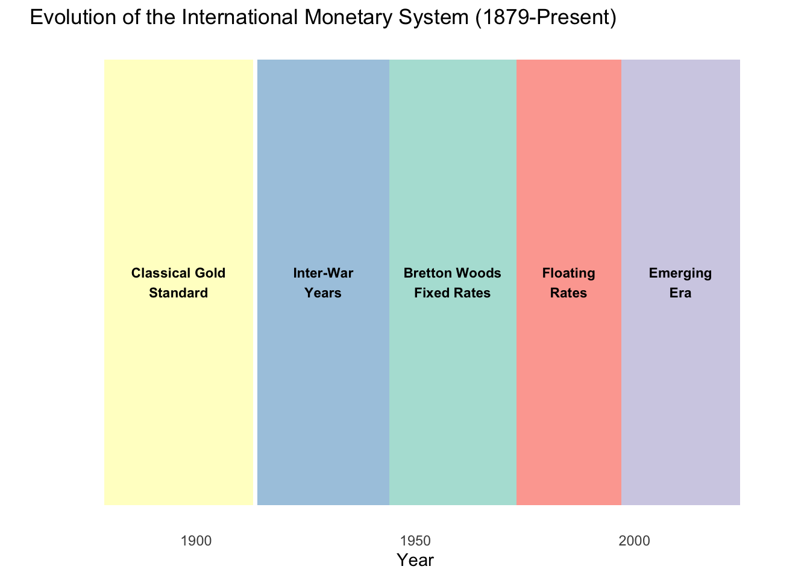
The international monetary system has evolved dramatically over the past 150 years. As Ronald McKinnon noted: “No world central bank issues a separate currency for commerce across national boundaries. Instead, a ‘system’ of national monies works more or less well in providing a medium of exchange and unit of account for current international transactions, as well as a store of value and standard of deferred payment for longer-term borrowing and lending.”
This means there’s no “world currency” or global monetary authority. Instead, we have a loose agreement between nations to exchange their currencies. How this agreement works has changed dramatically over time.
Attaching package: 'dplyr'The following objects are masked from 'package:stats':
filter, lagThe following objects are masked from 'package:base':
intersect, setdiff, setequal, union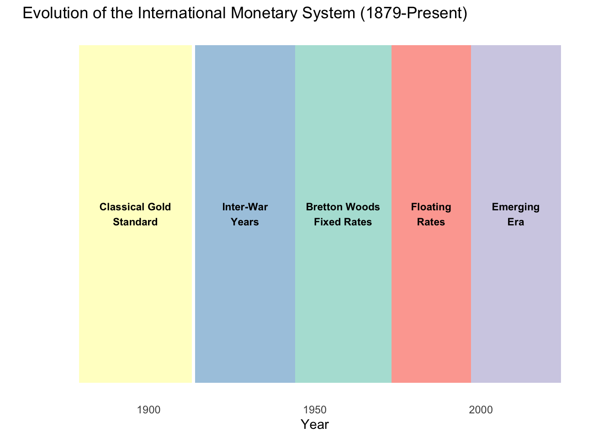
The gold standard was the first truly global monetary system. Under this system:
Each country set a fixed price for gold in their currency. Exchange rates between currencies were then determined by their relative gold values.
Example: Pre-WWI Exchange Rate Calculation
Before World War I:
# Gold standard exchange rate calculation
us_gold_price <- 20.67 # USD per ounce
uk_gold_price <- 4.2474 # GBP per ounce
# Calculate exchange rate
exchange_rate <- us_gold_price / uk_gold_price
cat("USD per GBP exchange rate:", round(exchange_rate, 4), "\n")USD per GBP exchange rate: 4.8665 cat("This means £1 = $", round(exchange_rate, 2), "\n", sep = "")This means £1 = $4.87This “par value” of $4.8665 per pound remained fixed as long as both countries maintained their gold prices. Exchange rates could only fluctuate within the narrow “gold points” - the cost of shipping physical gold between countries (approximately ±1%).
Automatic Adjustment: The gold standard had a built-in mechanism to correct trade imbalances:
Country runs trade deficit → Gold flows out → Money supply contracts → Prices fall → Exports become cheaper → Trade deficit corrects
Country runs trade surplus → Gold flows in → Money supply expands → Prices rise → Exports become more expensive → Trade surplus moderates
An interesting artifact from this era: In 1894, Czar Nicholas IV issued bonds for Imperial Russia that could be paid in six different gold currencies: French francs, Dutch guilders, Berlin marks, St. Petersburg rubles, British pounds, or U.S. dollars.
Why? Because under the gold standard, all these currencies had fixed relationships to each other through gold. The bondholder could choose to be paid in whichever currency was most convenient - they were all equivalent in gold value.
The classical gold standard collapsed with the outbreak of World War I in 1914:
Key Insight: The gold standard worked during peacetime with minimal government intervention, but couldn’t survive the strains of modern warfare and activist government policies.
This 30-year period saw chaos and instability in the international monetary system.
Many countries tried to return to gold in the 1920s:
Example: Britain Leaves Gold (1931)
Britain’s pound was overvalued on gold, crushing exports during the Depression. In September 1931, Britain abandoned gold, letting the pound fall by 30%. This helped British exports but hurt other countries still on gold.
Key Lesson: Fixed exchange rates require countries to coordinate monetary policies. When countries face different economic conditions, fixed rates create tensions.
But: Planning for post-war system began during the war (1944 Bretton Woods Conference).
In July 1944, representatives from 44 countries met at Bretton Woods, New Hampshire to design the post-war monetary system. Two brilliant economists dominated the conference:
The U.S. proposal won (because the U.S. held most of the world’s gold).
Key Features:
As the system evolved, the IMF created the Special Drawing Right (SDR) in 1969 as an international reserve asset - essentially “IMF money” that countries could hold as reserves.
The SDR is a basket of currencies. The current composition (as of 2016):
# Current SDR basket (2016 weights)
sdr_basket <- data.frame(
Currency = c("US Dollar", "Euro", "Chinese Yuan", "Japanese Yen", "British Pound"),
Weight = c(41.73, 30.93, 10.92, 8.33, 8.09),
Symbol = c("USD", "EUR", "CNY", "JPY", "GBP")
)
# Calculate total
cat("Total weight:", sum(sdr_basket$Weight), "%\n\n")Total weight: 100 %# Display table
print(sdr_basket) Currency Weight Symbol
1 US Dollar 41.73 USD
2 Euro 30.93 EUR
3 Chinese Yuan 10.92 CNY
4 Japanese Yen 8.33 JPY
5 British Pound 8.09 GBP# Create visualization
library(ggplot2)
ggplot(sdr_basket, aes(x = "", y = Weight, fill = Currency)) +
geom_bar(stat = "identity", width = 1) +
coord_polar("y", start = 0) +
theme_void() +
theme(legend.position = "right") +
labs(title = "SDR Basket Composition (2016 Revision)",
fill = "Currency") +
geom_text(aes(label = paste0(Weight, "%")),
position = position_stack(vjust = 0.5))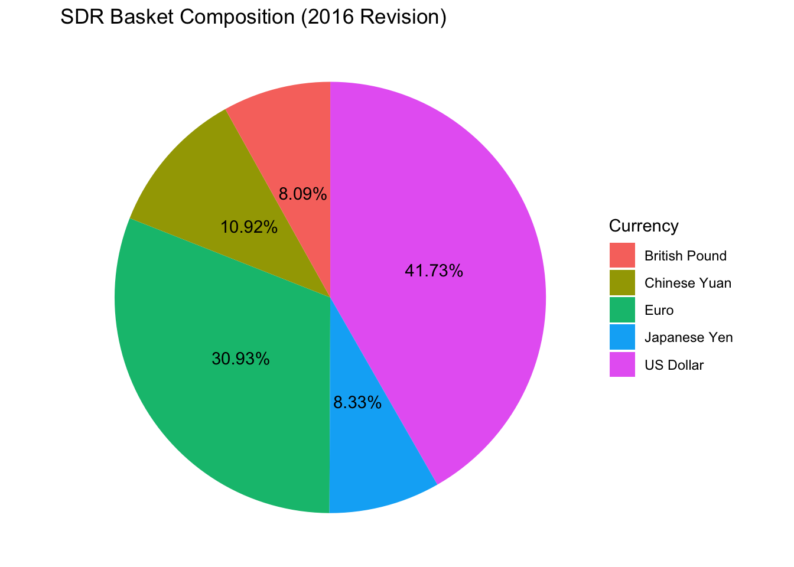
Important: Notice that the Chinese yuan (renminbi) was added to the SDR basket in 2016 - a major step in the internationalization of the RMB.
The Bretton Woods system operated for nearly 30 years. During this “golden age”:
Example: French Franc under Bretton Woods
Suppose France pegs the franc at 5 francs per dollar, with a ±1% band:
# Bretton Woods fixed rate system
par_value <- 5.00 # FF/USD
band <- 0.01 # ±1%
# Calculate implied gold value of franc
gold_price_usd <- 35 # USD per ounce
franc_per_ounce <- par_value * gold_price_usd
# Allowable fluctuation band (±1%)
upper_limit <- par_value * (1 + band)
lower_limit <- par_value * (1 - band)
cat("Par value: FF", par_value, "per USD\n")Par value: FF 5 per USDcat("Allowable range: FF", lower_limit, "to FF", upper_limit, "per USD\n")Allowable range: FF 4.95 to FF 5.05 per USDcat("Implied gold value: FF", franc_per_ounce, "per ounce of gold\n")Implied gold value: FF 175 per ounce of goldFrench Central Bank’s Obligations:
Belgian economist Robert Triffin identified a fundamental flaw in the system:
The Problem:
The Dilemma: Either:
This is exactly what happened in the late 1960s and early 1970s.
By the late 1960s, the system faced severe strains:
The Collapse:
Key Insight: Fixed exchange rate systems require either:
When the U.S. pursued inflationary policies and capital flowed freely, the system collapsed.
After 1973, major currencies floated against each other. This didn’t mean pure free floating, but rather:
Initial Concerns:
Reality:
A major change during this era: capital flows began to dominate trade flows
1950s-1960s:
1980s-1990s:
Example: Daily FX Market Volume
# Approximate daily FX trading volume (billions USD)
fx_volume <- data.frame(
Year = c(1977, 1986, 1992, 1995, 1998, 2001, 2004, 2007, 2010, 2013, 2016, 2019, 2022),
Volume = c(18, 188, 880, 1190, 1490, 1210, 1900, 3210, 3970, 5350, 5070, 6590, 7500)
)
library(ggplot2)
ggplot(fx_volume, aes(x = Year, y = Volume)) +
geom_line(color = "steelblue", size = 1.2) +
geom_point(color = "steelblue", size = 3) +
scale_y_continuous(labels = scales::comma) +
labs(title = "Daily Foreign Exchange Trading Volume",
subtitle = "The explosive growth of currency markets",
x = "Year",
y = "Daily Volume (Billions USD)") +
theme_minimal() +
theme(plot.title = element_text(face = "bold"))Warning: Using `size` aesthetic for lines was deprecated in ggplot2 3.4.0.
ℹ Please use `linewidth` instead.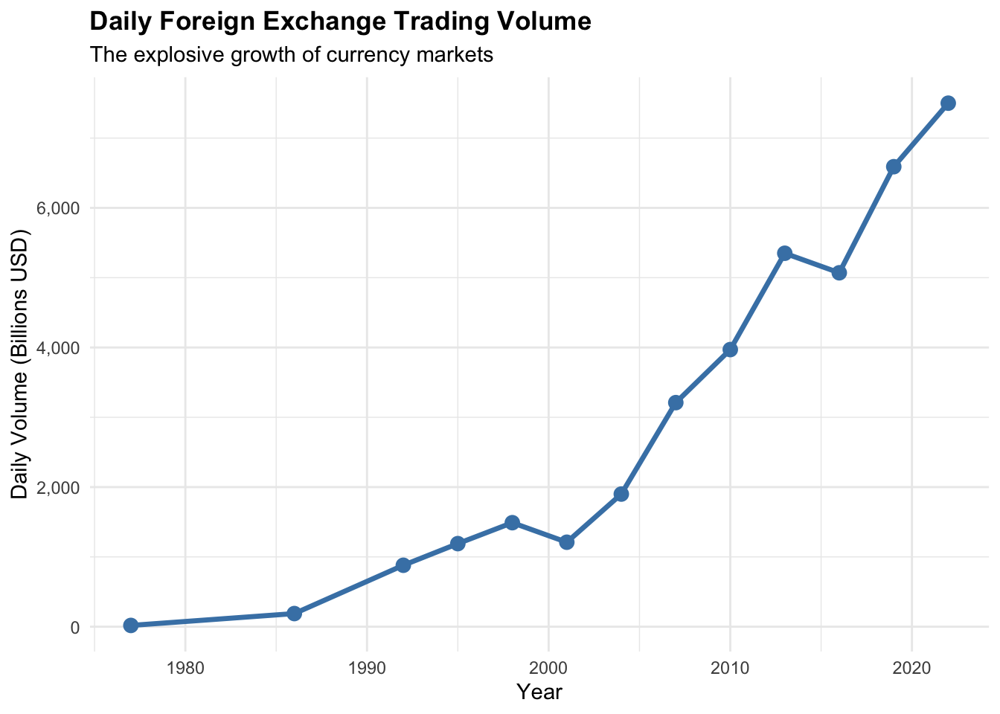
By the 1990s, foreign exchange markets were trading over $1 trillion per day, while global trade was only about $40 billion per day. Capital flows now dominated.
Plaza Accord (1985):
ERM Crisis (1992):
Mexican Peso Crisis (1994-1995):
Asian Financial Crisis (1997):
The Asian Financial Crisis of 1997 marked a turning point. Since then, the system has been characterized by:
The Global Financial Crisis changed thinking about monetary systems:
Lessons Learned:
Current Debates:
How do we categorize the bewildering variety of exchange rate regimes in use today? The IMF has developed a classification system.
Pre-1998: The IMF classified countries based on what they said they were doing (de jure classification):
Post-1998: The IMF switched to classifying based on what countries actually do (de facto classification):
Why the Change?
The Asian Financial Crisis revealed that many countries claiming to float were actually maintaining de facto pegs, making them vulnerable to sudden crises. The new system aimed to capture reality.
The IMF currently groups exchange rate regimes into four main categories:
Definition: No separate legal tender, or a currency board arrangement.
Characteristics:
Types:
Definition: Countries maintain some form of peg but with more flexibility than hard pegs.
Characteristics:
Types:
Definition: Exchange rate primarily determined by market with varying degrees of intervention.
Types:
Reality: Most “floating” countries are actually “managed floats” or “dirty floats” - they intervene frequently but don’t target specific rates.
Definition: Other managed arrangements that don’t fit cleanly into above categories.
Characteristics:
Examples:
Here’s the current distribution of regimes worldwide (based on IMF data):
# Data from Exhibit 2.5 in textbook
# Number of countries in each regime category over time
regime_data <- data.frame(
Year = rep(c(2008, 2009, 2013, 2019), each = 4),
Category = rep(c("Hard Pegs", "Soft Pegs", "Floating", "Residual"), 4),
Count = c(
# 2008
25, 83, 63, 13,
# 2009
24, 85, 63, 14,
# 2013
24, 91, 69, 10,
# 2019
25, 89, 66, 13
)
)
# Calculate percentages
regime_data <- regime_data %>%
group_by(Year) %>%
mutate(Total = sum(Count),
Percentage = Count / Total * 100)
# Create stacked area chart
ggplot(regime_data, aes(x = Year, y = Percentage, fill = Category)) +
geom_area(alpha = 0.7) +
scale_fill_brewer(palette = "Set2") +
labs(title = "Distribution of Exchange Rate Regimes (2008-2019)",
subtitle = "Based on IMF de facto classification",
x = "Year",
y = "Percentage of Countries",
fill = "Regime Type") +
theme_minimal() +
theme(plot.title = element_text(face = "bold"),
legend.position = "right")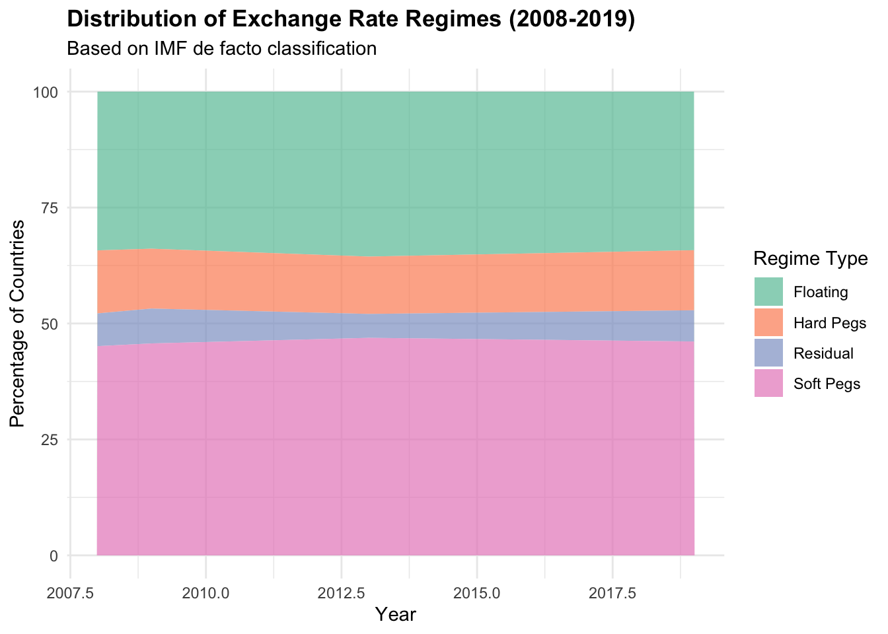
# Print summary for most recent year
cat("\nDistribution in 2019:\n")
Distribution in 2019:regime_2019 <- regime_data %>%
filter(Year == 2019) %>%
select(Category, Count, Percentage)Adding missing grouping variables: `Year`print(regime_2019, n = 4)# A tibble: 4 × 4
# Groups: Year [1]
Year Category Count Percentage
<dbl> <chr> <dbl> <dbl>
1 2019 Hard Pegs 25 13.0
2 2019 Soft Pegs 89 46.1
3 2019 Floating 66 34.2
4 2019 Residual 13 6.74Key Observations:
Important: The “right” exchange rate regime depends on a country’s specific circumstances:
There is no one-size-fits-all solution.
One of the longest-running debates in international finance: Which is better, fixed or flexible exchange rates?
Spoiler Alert: There’s no clear winner. Each system has advantages and disadvantages, and the “best” choice depends on a country’s specific circumstances.
Example: German exporter sells machinery to U.S. customer
# Compare fixed vs floating scenarios
# German exporter sells machine tool to US customer
# Sale price: $1.2 million
# Cost to produce: €800,000
# Scenario 1: Fixed rate at 1.20 USD/EUR
fixed_rate <- 1.20
sale_price_usd <- 1200000
# Scenario 2: Floating rate - could be anywhere
# Let's look at range of possibilities
floating_rates <- seq(1.00, 1.40, by = 0.05)
# Calculate euro receipts under each scenario
cost_eur <- 800000
fixed_eur_received <- sale_price_usd / fixed_rate
fixed_profit <- fixed_eur_received - cost_eur
cat("FIXED RATE SCENARIO\n")FIXED RATE SCENARIOcat("==================\n")==================cat("Sale price: $", format(sale_price_usd, big.mark = ","), "\n", sep = "")Sale price: $1,200,000cat("Exchange rate: ", fixed_rate, " USD/EUR\n", sep = "")Exchange rate: 1.2 USD/EURcat("Euro receipts: €", format(round(fixed_eur_received), big.mark = ","), "\n", sep = "")Euro receipts: €1e+06cat("Production cost: €", format(cost_eur, big.mark = ","), "\n", sep = "")Production cost: €8e+05cat("Profit: €", format(round(fixed_profit), big.mark = ","), "\n\n", sep = "")Profit: €2e+05cat("FLOATING RATE SCENARIOS\n")FLOATING RATE SCENARIOScat("=======================\n")=======================floating_results <- data.frame(
Rate = floating_rates,
EUR_Received = sale_price_usd / floating_rates,
Profit = (sale_price_usd / floating_rates) - cost_eur
)
print(floating_results, row.names = FALSE) Rate EUR_Received Profit
1.00 1200000.0 400000.00
1.05 1142857.1 342857.14
1.10 1090909.1 290909.09
1.15 1043478.3 243478.26
1.20 1000000.0 200000.00
1.25 960000.0 160000.00
1.30 923076.9 123076.92
1.35 888888.9 88888.89
1.40 857142.9 57142.86cat("\nProfit range: €", format(round(min(floating_results$Profit)), big.mark = ","),
" to €", format(round(max(floating_results$Profit)), big.mark = ","), "\n", sep = "")
Profit range: €57,143 to €4e+05Under fixed rates, the German exporter knows exactly what profit to expect. Under floating rates, profit could vary by hundreds of thousands of euros!
Example: Euro-dollar exchange rate volatility
# Simulate euro-dollar exchange rate volatility
# Based on actual patterns from 2010-2020
set.seed(42)
n_days <- 252 * 5 # 5 years of trading days
# Starting rate
start_rate <- 1.35
# Generate realistic exchange rate path
# Mean reversion + random shocks
returns <- rnorm(n_days, mean = 0, sd = 0.006) # ~0.6% daily volatility
levels <- start_rate * cumprod(1 + returns)
# Create time series
dates <- seq(from = as.Date("2015-01-01"), by = "day", length.out = n_days)
fx_data <- data.frame(Date = dates, Rate = levels)
# Plot
library(ggplot2)
ggplot(fx_data, aes(x = Date, y = Rate)) +
geom_line(color = "darkblue", alpha = 0.7) +
geom_hline(yintercept = start_rate, linetype = "dashed", color = "red") +
labs(title = "Simulated EUR/USD Exchange Rate Volatility",
subtitle = "Illustrating daily fluctuations under floating rates",
x = "Date",
y = "USD per EUR") +
theme_minimal()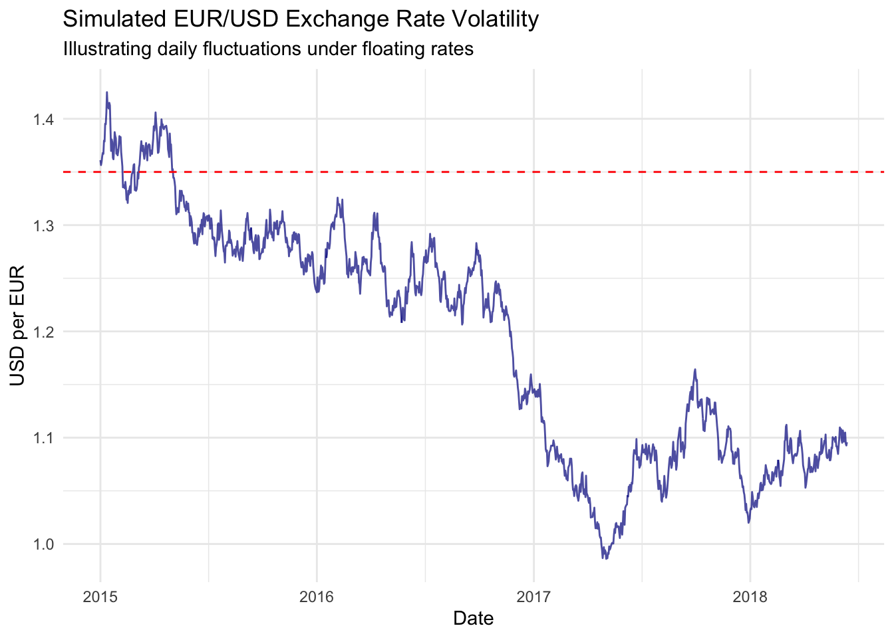
# Calculate statistics
cat("Exchange rate statistics:\n")Exchange rate statistics:cat("Starting rate: ", round(start_rate, 4), "\n", sep = "")Starting rate: 1.35cat("Minimum rate: ", round(min(levels), 4), "\n", sep = "")Minimum rate: 0.986cat("Maximum rate: ", round(max(levels), 4), "\n", sep = "")Maximum rate: 1.425cat("Range: ", round((max(levels) - min(levels)) / start_rate * 100, 1), "%\n", sep = "")Range: 32.5%cat("Standard deviation: ", round(sd(returns) * 100, 2), "% (daily)\n", sep = "")Standard deviation: 0.6% (daily)cat("Annualized volatility: ", round(sd(returns) * sqrt(252) * 100, 1), "%\n", sep = "")Annualized volatility: 9.5%This volatility creates risk for businesses engaged in international trade, but also provides automatic adjustment to changing economic conditions.
What does the evidence show? After decades of research:
On Growth:
On Volatility:
On Crises:
On Trade:
“Corner Solutions” Hypothesis (1990s-2000s):
Reality Check (2010s-Present):
Current View:
Key Insight: A well-managed soft peg with strong institutions may outperform a poorly-managed hard peg or free float. The regime choice matters less than the quality of macroeconomic management.
Perhaps the most important concept in international finance for understanding exchange rate regimes. The Impossible Trinity (also called the “Trilemma”) states:
A country cannot simultaneously achieve:
You can pick any TWO, but not all three.
Why is this impossible? Let’s think through it:
Scenario: Country tries to maintain fixed rate with capital mobility and independent monetary policy.
The Three Choices:
library(ggplot2)
# Create triangle vertices
triangle <- data.frame(
x = c(0, 1, 0.5, 0),
y = c(0, 0, sqrt(3)/2, 0),
label = c("Exchange Rate\nStability", "Full Financial\nIntegration",
"Monetary\nIndependence", "")
)
# Country examples positioned on triangle edges
countries <- data.frame(
Country = c("Eurozone", "United States", "China (pre-2005)",
"Hong Kong", "Most emerging\nmarkets", "Floating rate\ncountries"),
x = c(0.5, 0.75, 0.25, 0, 0.5, 1),
y = c(0, sqrt(3)/4, sqrt(3)/4, 0, sqrt(3)/2, 0),
Choice = c("Rate stability +\nIntegration", "Independence +\nIntegration",
"Independence +\nRate stability", "Rate stability +\nIntegration",
"All three?\n(Impossible!)", "Independence +\nIntegration")
)
# Create plot
ggplot() +
# Draw triangle
geom_path(data = triangle, aes(x = x, y = y), size = 1.5, color = "darkblue") +
# Label vertices
geom_text(data = triangle[1:3,], aes(x = x, y = y, label = label),
size = 4.5, fontface = "bold", vjust = c(1.5, 1.5, -0.5)) +
# Add country positions
geom_point(data = countries, aes(x = x, y = y),
size = 4, color = "red", alpha = 0.6) +
geom_text(data = countries, aes(x = x, y = y, label = Country),
size = 3, vjust = -1.2) +
# Add center point showing impossibility
geom_point(aes(x = 0.5, y = sqrt(3)/6), size = 6,
color = "red", shape = 4, stroke = 2) +
annotate("text", x = 0.5, y = sqrt(3)/6 + 0.1,
label = "IMPOSSIBLE\nto be here!",
size = 4, fontface = "bold", color = "red") +
coord_fixed() +
theme_void() +
labs(title = "The Impossible Trinity (Trilemma)",
subtitle = "Countries must choose TWO of three goals") +
theme(plot.title = element_text(size = 16, face = "bold", hjust = 0.5),
plot.subtitle = element_text(size = 12, hjust = 0.5))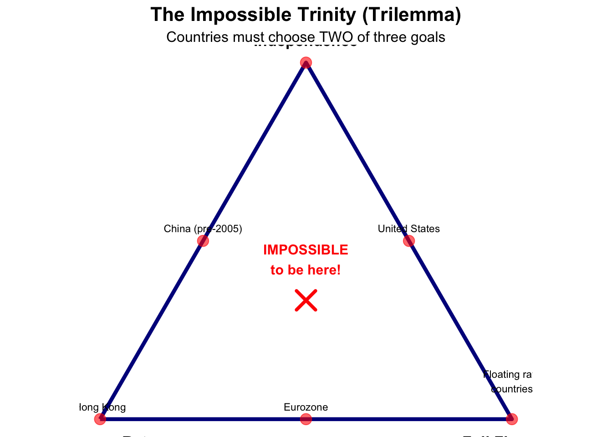
Choices:
Implications:
Choices:
Implications:
Choices:
Implications:
Note: China has been gradually moving toward more flexibility on all three dimensions - a challenging transition!
Choices:
Implications:
The Impossible Trinity explains many policy dilemmas:
Why do currency crises happen?
Example: Asian Financial Crisis (1997)
Why do countries use capital controls?
Why do some countries adopt currency boards?
Why float?
How have countries’ positions on the trinity evolved over time?
Bretton Woods Era (1945-1973):
1980s-1990s:
2000s-Present:
The Key Question: As financial integration deepens globally, can any country maintain both exchange rate stability and monetary independence? History suggests no.
Many countries that officially float actually intervene heavily to stabilize their rates. Why?
Result: Try to get benefits of all three (impossible!) → Vulnerable to crises
Some economists argue there’s a fourth objective: Financial stability
With free capital flows, countries may experience:
Do we need capital controls even with floating rates? Controversial debate.
Could Central Bank Digital Currencies (CBDCs) change the trinity?
Too early to know, but the trinity’s logic likely still applies.
Exercise 1: Classify these countries based on the Impossible Trinity:
Exercise 2: During the COVID-19 pandemic, the Fed lowered interest rates to near zero. What happened to:
Why did outcomes differ from what the trinity might predict?
The euro represents one of the most ambitious monetary experiments in history. In 1999, eleven European countries abandoned their national currencies to adopt a single currency: the euro (€).
Today: 20 countries use the euro, with a combined GDP rivaling the United States. But the path has been rocky.
The Vision: European integration to ensure peace and prosperity after two devastating world wars.
Steps Toward Monetary Union:
To join the euro, countries had to meet five criteria:
Purpose: Ensure only countries with similar economic conditions and sound finances joined.
Reality: Several countries (including Greece) later found to have manipulated statistics to meet criteria. This would cause problems later.
Location: Frankfurt, Germany
Mandate: Maintain price stability (inflation target ~2%)
Unlike Fed: ECB has single mandate (price stability), not dual mandate (also employment)
Governance:
Key Issue: “One size fits all” monetary policy for diverse economies:
The Problem: ECB sets one interest rate for everyone, but countries face different economic conditions.
Main Tools:
Example: During eurozone crisis (2010-2015):
Benefits Realized:
Example: Interest Rate Convergence
# Hypothetical country comparison
# Before euro (1995) vs. After euro (2005)
interest_rates <- data.frame(
Country = c("Germany", "France", "Italy", "Spain", "Greece",
"Germany", "France", "Italy", "Spain", "Greece"),
Period = c(rep("Before Euro (1995)", 5), rep("After Euro (2005)", 5)),
Rate = c(6.5, 7.5, 12.0, 11.5, 17.5, # Before
3.5, 3.5, 3.6, 3.5, 3.6) # After
)
library(ggplot2)
ggplot(interest_rates, aes(x = Country, y = Rate, fill = Period)) +
geom_bar(stat = "identity", position = "dodge") +
labs(title = "10-Year Government Bond Yields: Before and After Euro",
subtitle = "Convergence to German rates",
x = "Country",
y = "Interest Rate (%)",
fill = "Period") +
theme_minimal() +
scale_fill_brewer(palette = "Set1")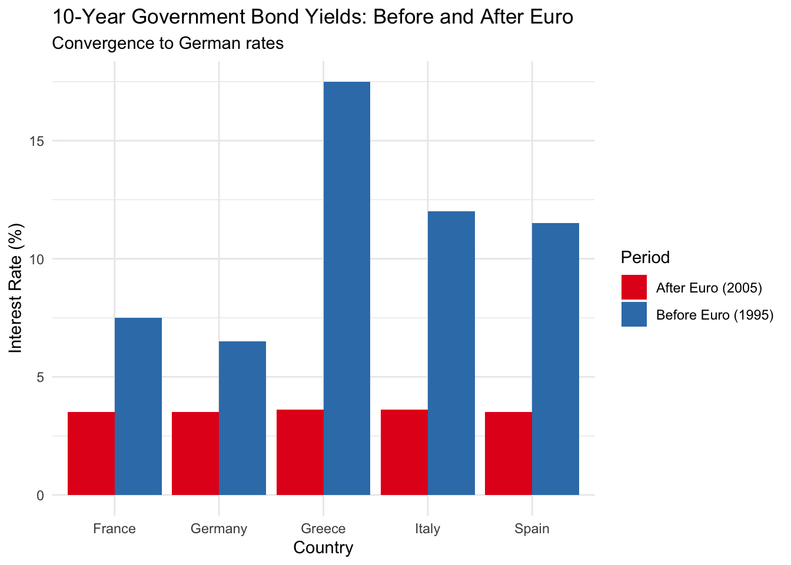
cat("\nAverage spread to Germany:\n")
Average spread to Germany:cat("Before euro: ",
round(mean(c(7.5, 12.0, 11.5, 17.5) - 6.5), 1),
" percentage points\n", sep = "")Before euro: 5.6 percentage pointscat("After euro: ",
round(mean(c(3.5, 3.6, 3.5, 3.6) - 3.5), 1),
" percentage points\n", sep = "")After euro: 0.1 percentage pointsThis convergence seemed like a miracle - suddenly weak countries could borrow cheaply! But it created moral hazard and encouraged excessive borrowing.
The Global Financial Crisis (2008-2009):
The Eurozone Sovereign Debt Crisis (2010-2015):
In late 2009, Greece revealed it had massively understated its budget deficit. Markets panicked.
The PIIGS Crisis:
Key Problem: Countries couldn’t devalue to restore competitiveness (locked into euro). Adjustment required:
Example: Greece
# Greek crisis by the numbers
greece_data <- data.frame(
Metric = c("GDP decline", "Unemployment rate", "Government debt",
"Youth unemployment", "Pension cuts", "Public sector wage cuts"),
Peak_Value = c("-25%", "27.5%", "180% of GDP",
"60%", "-40%", "-30%"),
Period = c("2008-2016", "2013", "2016",
"2013", "2010-2015", "2010-2015")
)
print(greece_data) Metric Peak_Value Period
1 GDP decline -25% 2008-2016
2 Unemployment rate 27.5% 2013
3 Government debt 180% of GDP 2016
4 Youth unemployment 60% 2013
5 Pension cuts -40% 2010-2015
6 Public sector wage cuts -30% 2010-2015cat("\n")cat("Total bailout packages: €289 billion\n")Total bailout packages: €289 billioncat("Conditions: Harsh austerity, tax increases, spending cuts\n")Conditions: Harsh austerity, tax increases, spending cutscat("Social cost: Emigration, poverty, political instability\n")Social cost: Emigration, poverty, political instabilityThe human cost was devastating. Greece suffered a depression worse than the U.S. in the 1930s.
ECB Response:
Mario Draghi’s Famous Quote (July 2012):
“Within our mandate, the ECB is ready to do whatever it takes to preserve the euro. And believe me, it will be enough.”
This speech alone calmed markets and is credited with saving the euro.
The Euro Today:
Unresolved Issues:
The Future:
Will the euro survive? Most economists now say yes, but:
Important Contrast: The United Kingdom never adopted the euro, keeping the pound sterling.
Why?
Brexit (2016-2020):
Lesson: Exchange rate flexibility helped UK adjust to Brexit shock. Euro members couldn’t have devalued.
What Worked:
What Didn’t:
Key Insight from Impossible Trinity:
The euro represents choice of: Exchange rate stability + Financial integration
This requires giving up: Monetary independence
But without fiscal union, this creates persistent tensions and risks future crises.
Robert Mundell’s Optimum Currency Area Theory:
Countries should share currency if:
Europe gets mixed grades. The euro works for core countries (Germany, France, Netherlands) but is challenging for periphery.
One of the most significant developments in international finance: China’s efforts to make the renminbi (RMB, also called yuan) a major international currency.
Why It Matters:
The Question: Can the RMB challenge the dollar’s dominance?
1949-1994: Multiple exchange rate system
1994: Unification at 8.7 yuan per dollar
1994-2005: Fixed peg at ~8.28 yuan per dollar
2005-2008: Managed appreciation
2008-2010: Re-pegged during Global Financial Crisis
2010-2015: Resumed appreciation
2015: Surprise devaluation (August)
2016-Present: Managed float
Is the RMB Undervalued?
Those who say YES:
Those who say NO:
Reality: Valuation debates are notoriously difficult. Most economists think RMB was significantly undervalued in 2000s, less clear today.
# CNY/USD historical pattern (simplified)
# Note: These are approximate values for illustration
rmb_data <- data.frame(
Year = seq(1995, 2024, by = 1),
Rate = c(
8.7, 8.3, 8.3, 8.3, 8.3, # 1995-1999: Post-unification adjustment
8.28, 8.28, 8.28, 8.28, 8.28, # 2000-2004: Fixed peg
8.19, 7.97, 7.60, 6.95, 6.83, # 2005-2009: Appreciation then re-peg
6.77, 6.46, 6.31, 6.20, 6.14, # 2010-2014: Resumed appreciation
6.28, 6.64, 6.76, 6.88, 6.91, # 2015-2019: Devaluation and stability
6.90, 6.45, 6.73, 7.09, 7.25 # 2020-2024: COVID and current
),
Regime = c(
rep("Unification adjustment", 5),
rep("Fixed peg", 5),
rep("Managed appreciation", 5),
rep("Renewed appreciation", 5),
rep("Devaluation & adjustment", 5),
rep("Recent period", 5)
)
)
library(ggplot2)
# Create plot
ggplot(rmb_data, aes(x = Year, y = Rate, color = Regime)) +
geom_line(size = 1.2) +
geom_point(size = 2) +
scale_y_continuous(trans = "reverse") + # Reverse so up = RMB appreciation
labs(title = "Chinese Yuan (CNY) per US Dollar (1995-2024)",
subtitle = "Lower values = stronger yuan (RMB appreciation)",
x = "Year",
y = "CNY per USD",
color = "Exchange Rate Regime") +
theme_minimal() +
theme(legend.position = "bottom")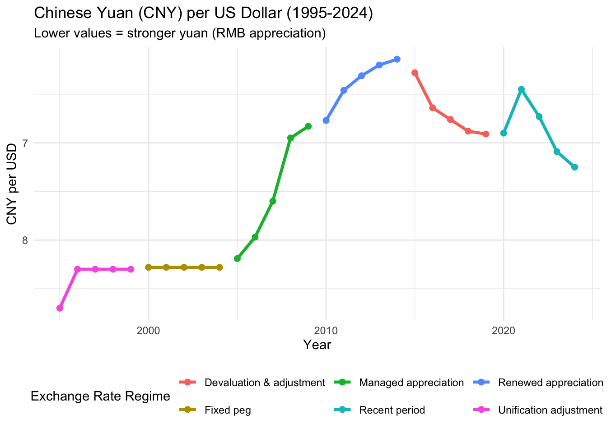
# Key events annotations
key_events <- data.frame(
Year = c(1994, 2005, 2008, 2015, 2020),
Rate = c(8.7, 8.19, 6.83, 6.28, 6.90),
Event = c("Unification", "End of peg", "GFC re-peg", "Surprise\ndevaluation", "COVID")
)
# Would add geom_text for events but keeping it simpleChina has developed a unique two-market system for the RMB:
Location: Mainland China
Characteristics:
Access: Foreign companies operating in China use CNY
Location: Hong Kong (primarily), also Singapore, London, others
Characteristics:
Access: International investors and companies use CNH
Capital Controls:
Solution:
The Spread: CNY and CNH rates usually differ slightly:
# Simulated CNY vs CNH rates
# Typically CNH is more volatile and can differ from CNY
set.seed(123)
days <- 1:252 # One year
cny_rate <- 6.50 + cumsum(rnorm(252, mean = 0, sd = 0.002))
cnh_rate <- cny_rate + rnorm(252, mean = 0.01, sd = 0.02) # CNH slightly different
spread_data <- data.frame(
Day = days,
CNY = cny_rate,
CNH = cnh_rate,
Spread = (cnh_rate - cny_rate) * 1000 # In basis points
)
# Plot the spread
ggplot(spread_data, aes(x = Day, y = Spread)) +
geom_line(color = "steelblue") +
geom_hline(yintercept = 0, linetype = "dashed", color = "red") +
labs(title = "CNY vs. CNH Spread (Simulated)",
subtitle = "Difference between onshore and offshore yuan rates",
x = "Trading Day",
y = "Spread (basis points, CNH - CNY)") +
theme_minimal()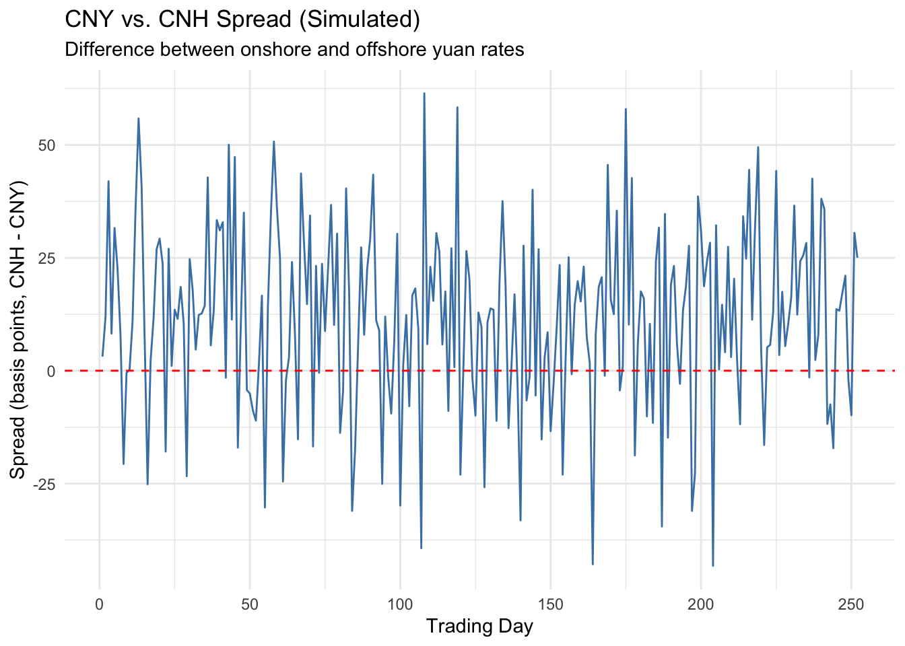
cat("Average absolute spread:", round(mean(abs(spread_data$Spread)), 1), "basis points\n")Average absolute spread: 18.9 basis pointscat("Maximum spread:", round(max(abs(spread_data$Spread)), 1), "basis points\n")Maximum spread: 61.4 basis pointsDuring crises, the spread can widen significantly as offshore yuan trades freely while onshore yuan is controlled.
A currency becomes international through three stages:
Basic Use: Denominating and settling international trade transactions
Current Status - RMB:
Data (2019 IMF Study):
Why So Low?
Advanced Use: International bond issuance, bank deposits, loans
Current Status - RMB:
Obstacles:
Ultimate Status: Central banks hold currency as official reserves
Current Status - RMB:
# Global reserve currency shares (Q1 2023 approximate)
reserves <- data.frame(
Currency = c("US Dollar", "Euro", "Japanese Yen", "British Pound",
"Chinese Yuan", "Canadian Dollar", "Australian Dollar", "Other"),
Share = c(58.4, 20.5, 5.5, 4.9, 2.7, 2.1, 1.8, 4.1),
Code = c("USD", "EUR", "JPY", "GBP", "CNY", "CAD", "AUD", "Other")
)
library(ggplot2)
ggplot(reserves, aes(x = reorder(Currency, -Share), y = Share, fill = Currency)) +
geom_bar(stat = "identity") +
labs(title = "Global Foreign Exchange Reserves by Currency (2023)",
subtitle = "Share of identified official foreign exchange reserves",
x = "Currency",
y = "Share (%)") +
theme_minimal() +
theme(axis.text.x = element_text(angle = 45, hjust = 1),
legend.position = "none") +
geom_text(aes(label = paste0(Share, "%")), vjust = -0.5)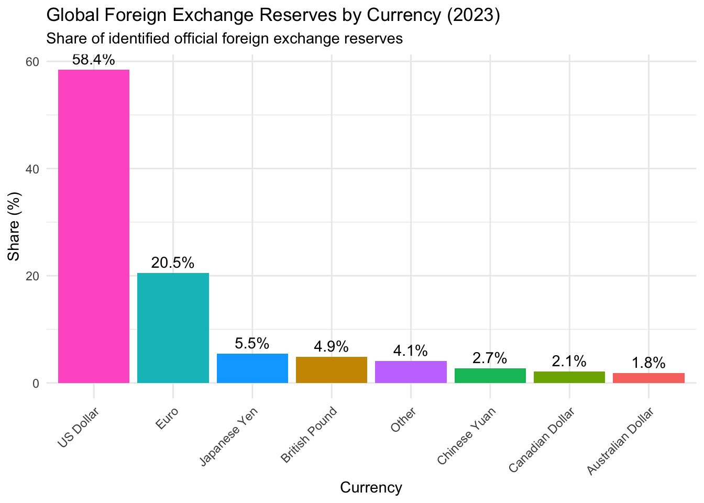
cat("\nKey observations:\n")
Key observations:cat("- Dollar dominates despite decline from 70%+ in 2000\n")- Dollar dominates despite decline from 70%+ in 2000cat("- Euro second but stable\n")- Euro second but stablecat("- RMB only 2.7% despite China's economic size\n")- RMB only 2.7% despite China's economic sizecat("- RMB share was 0% in 2015, so growing rapidly from low base\n")- RMB share was 0% in 2015, so growing rapidly from low baseThe RMB’s Challenge:
China is world’s #2 economy, but RMB only 2.7% of reserves. Why?
Requirements:
China’s Dilemma:
Most Likely Path: Gradual, controlled internationalization over decades, but RMB unlikely to truly rival dollar without fundamental political reforms.
Remember the Triffin Dilemma from Bretton Woods? It applies to any reserve currency country.
The Dilemma for China:
If RMB becomes major reserve currency:
Problem 1: World needs RMB for reserves and transactions
Problem 2: If China runs persistent deficits
The U.S. Experience:
China’s Choice:
No easy answer. This explains why RMB internationalization has been slower than some predicted.
China is a global leader in Central Bank Digital Currency (CBDC):
e-CNY Project:
Potential International Implications:
Concerns:
Reality Check: Even with e-CNY, the fundamental requirements for reserve currency status don’t change. Technology alone won’t make RMB dominant without addressing capital controls, rule of law, and financial market development.
Emerging market countries face particularly difficult choices about exchange rate regimes. Unlike developed countries with deep financial markets and strong institutions, emerging markets must deal with:
Given these challenges, what should emerging markets do?
A currency board is the strongest form of fixed exchange rate short of full dollarization:
Key Features:
Advantages:
Disadvantages:
Background: Argentina suffered hyperinflation in the late 1980s
The Convertibility Plan (1991):
Economy Minister Domingo Cavallo implemented currency board:
Initial Success (1991-1998):
# Argentina currency board results
argentina_data <- data.frame(
Indicator = c("Inflation", "GDP growth", "FDI inflows", "Unemployment"),
Before_1990 = c("3,000%+", "-2%", "$1B", "8%"),
After_1995 = c("2-3%", "+4%", "$5B", "12%")
)
print(argentina_data) Indicator Before_1990 After_1995
1 Inflation 3,000%+ 2-3%
2 GDP growth -2% +4%
3 FDI inflows $1B $5B
4 Unemployment 8% 12%cat("\nImpressive achievements:\n")
Impressive achievements:cat("- Hyperinflation crushed\n")- Hyperinflation crushedcat("- Credibility restored\n")- Credibility restoredcat("- Investment returned\n")- Investment returnedcat("- GDP grew rapidly\n")- GDP grew rapidlyThe Problem: Rigid System Couldn’t Adjust
Late 1990s brought challenges:
The Collapse (2001-2002):
Lessons:
Argentina’s Subsequent History:
Full dollarization means abandoning domestic currency entirely and adopting a foreign currency (usually USD) as legal tender.
Key Features:
Even More Extreme Than Currency Board:
Background: The Sucre Collapses
Late 1990s crisis:
The Sucre’s Collapse:
# Ecuador sucre depreciation (approximate)
sucre_data <- data.frame(
Year = c(1998, 1999, 2000),
Rate = c(7000, 20000, 25000),
Event = c("Crisis begins", "Free fall", "Dollarization")
)
library(ggplot2)
ggplot(sucre_data, aes(x = Year, y = Rate)) +
geom_line(color = "red", size = 1.5) +
geom_point(size = 3, color = "darkred") +
geom_text(aes(label = Event), vjust = -1) +
scale_y_continuous(labels = scales::comma) +
labs(title = "Ecuador: Sucre per US Dollar",
subtitle = "Currency collapse 1998-2000",
x = "Year",
y = "Sucres per USD") +
theme_minimal()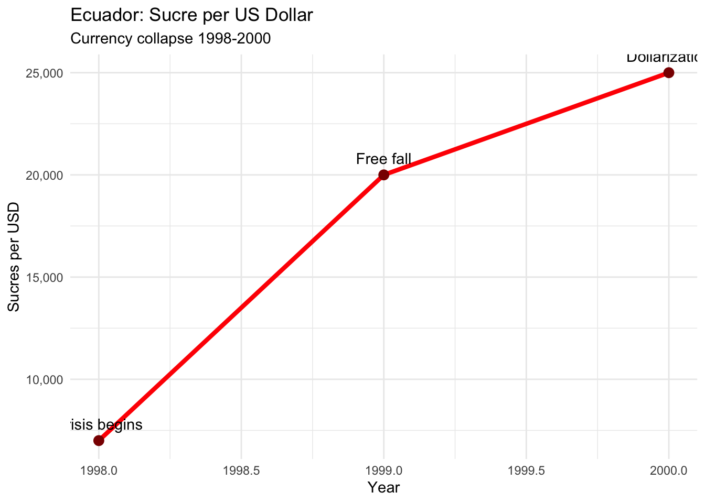
cat("\nThe collapse:\n")
The collapse:cat("- 1998: 7,000 sucres/dollar\n")- 1998: 7,000 sucres/dollarcat("- 1999: 20,000 sucres/dollar (down 65%)\n")- 1999: 20,000 sucres/dollar (down 65%)cat("- 2000: 25,000 sucres/dollar (down 72% from 1998)\n")- 2000: 25,000 sucres/dollar (down 72% from 1998)cat("- Annual inflation: 60%+\n")- Annual inflation: 60%+Dollarization Decision (January 2000):
President Jamil Mahuad announced:
Results (2000-Present):
Positives:
Negatives:
Example: 2008-2009 Global Financial Crisis
Has Dollarization “Worked”?
Depends on Criteria:
Would Ecuador Reverse It?
Very difficult politically:
Dollarization is essentially irreversible once implemented.
Background:
El Salvador dollarized in 2001 after civil war and currency instability.
Similar Story to Ecuador:
The Bitcoin Experiment (2021):
In June 2021, El Salvador became first country to adopt Bitcoin as legal tender alongside the dollar!
President Nayib Bukele’s Rationale:
Implementation:
Results (2021-2024):
Problems:
Bitcoin Holdings:
The Irony:
El Salvador dollarized to gain monetary stability. Adding Bitcoin reintroduced massive monetary instability!
Lesson: Gimmicks don’t solve fundamental economic problems. Sound institutions, fiscal discipline, and good governance matter more than currency choice.
Zimbabwe’s experience is a cautionary tale about when dollarization is forced by hyperinflation.
Background: Hyperinflation
Robert Mugabe’s policies destroyed Zimbabwe’s economy:
How Bad Was It?
# Zimbabwe hyperinflation was so extreme it broke normal scales
# Peak estimate: 89.7 sextillion percent (2008)
cat("Zimbabwe Hyperinflation:\n")Zimbabwe Hyperinflation:cat("=======================\n\n")=======================cat("July 2008: 231,000,000% annual inflation\n")July 2008: 231,000,000% annual inflationcat("November 2008: 89.7 SEXTILLION percent (unofficial estimate)\n")November 2008: 89.7 SEXTILLION percent (unofficial estimate)cat(" That's: 89,700,000,000,000,000,000,000%\n\n") That's: 89,700,000,000,000,000,000,000%cat("Currency denominations issued:\n")Currency denominations issued:cat("- $1 (original)\n")- $1 (original)cat("- $100,000\n")- $100,000cat("- $1,000,000\n")- $1,000,000cat("- $100,000,000\n")- $100,000,000cat("- $100 TRILLION (largest ever issued)\n\n")- $100 TRILLION (largest ever issued)cat("Prices doubled every: 24.7 hours (at peak)\n\n")Prices doubled every: 24.7 hours (at peak)cat("Example: Loaf of bread\n")Example: Loaf of breadcat("- 2000: Z$0.55\n")- 2000: Z$0.55cat("- 2008: Z$1.6 TRILLION\n")- 2008: Z$1.6 TRILLIONDe Facto Dollarization (2008-2009):
Official Multi-Currency System (2009-2020):
Government formally abandoned Zimbabwe dollar (April 2009):
Results:
Attempted Return (2019-2020):
Government tried to reintroduce Zimbabwe dollar:
Lesson: Currency is not just symbolic. Without fiscal discipline and sound institutions, any currency will fail. Zimbabwe’s problem wasn’t the currency choice - it was governance.
Current Status (2024): Officially Zimbabwe dollar, but USD widely used informally. Government tolerance of dollar use varies.
Given these experiences, what should emerging market countries choose?
Many emerging markets officially float but actually intervene heavily. Why?
Reasons for Fear of Floating:
Result: “Fear of floating” - Countries that claim to float actually manage rates heavily.
But emerging markets also fear hard pegs. Why?
Reasons for Fear of Pegging:
Result: Most emerging markets use soft pegs or managed floats. Try to get benefits of both systems but vulnerable to crises.
Recent Research Suggests:
No universal answer - Depends on country characteristics
Institutions matter more than regime - Countries with strong institutions can make any regime work
Capital controls may help - Allow more policy space
Flexible inflation targeting - For countries that can float
Hard pegs or float, avoid soft pegs - “Corner solutions”
Small, open economies: May benefit from hard peg/dollarization
Commodity exporters: Need flexibility
Manufacturing exporters: May prefer stability
Countries with weak institutions:
We’ve discussed the Chinese RMB’s internationalization attempts. What about the broader picture?
As of 2023:
# More detailed reserve currency data
reserve_detail <- data.frame(
Currency = c("US Dollar", "Euro", "Japanese Yen", "British Pound",
"Chinese Yuan", "Canadian Dollar", "Australian Dollar",
"Swiss Franc", "Other"),
Share_2023 = c(58.4, 20.5, 5.5, 4.9, 2.7, 2.1, 1.8, 0.2, 3.9),
Share_2015 = c(65.8, 19.7, 4.0, 4.8, 1.1, 1.9, 1.8, 0.3, 0.6),
Change = c(-7.4, 0.8, 1.5, 0.1, 1.6, 0.2, 0, -0.1, 3.3)
)
library(ggplot2)
library(dplyr)
# Create comparison plot
reserve_long <- reserve_detail %>%
select(Currency, Share_2015, Share_2023) %>%
tidyr::pivot_longer(cols = c(Share_2015, Share_2023),
names_to = "Year",
values_to = "Share") %>%
mutate(Year = ifelse(Year == "Share_2015", "2015", "2023"))
ggplot(reserve_long, aes(x = reorder(Currency, -Share), y = Share, fill = Year)) +
geom_bar(stat = "identity", position = "dodge") +
labs(title = "Global Reserve Currency Shares: 2015 vs 2023",
subtitle = "Dollar declining but still dominant",
x = "Currency",
y = "Share of Global Reserves (%)") +
theme_minimal() +
theme(axis.text.x = element_text(angle = 45, hjust = 1)) +
scale_fill_brewer(palette = "Set1")
# Print change data
cat("\nChanges in reserve shares (2015-2023):\n")
Changes in reserve shares (2015-2023):print(reserve_detail[, c("Currency", "Change")], row.names = FALSE) Currency Change
US Dollar -7.4
Euro 0.8
Japanese Yen 1.5
British Pound 0.1
Chinese Yuan 1.6
Canadian Dollar 0.2
Australian Dollar 0.0
Swiss Franc -0.1
Other 3.3Key Observations:
Why does the dollar remain so dominant despite U.S. challenges?
1. Network Effects (Most Important)
2. Financial Market Depth
3. Rule of Law and Property Rights
4. Military and Political Power
5. Inertia and Path Dependence
1. Persistent U.S. Current Account Deficits
2. Political Dysfunction
3. Weaponization of Dollar
4. Rise of China
5. Digital Currencies
Scenario 1: Dollar Continues Dominance (Most Likely, Near Term)
Scenario 2: Multi-Polar System (Medium Term)
Scenario 3: Digital Revolution (Long Term)
Scenario 4: New Bretton Woods
Historical Precedent: Pound to Dollar
For RMB to Challenge Dollar:
Most Likely Reality: Gradual diversification away from dollar, but no single replacement. Multi-polar system with dollar still first among equals.
Could the SDR become the global reserve currency?
Arguments For:
Arguments Against:
Reality: SDR unlikely to become true reserve currency without major reform of international monetary system. Would require agreement among major powers (U.S., EU, China). Politically difficult.
For Businesses:
For Countries:
For Students/Future Leaders:
Key Insight: Currency dominance reflects economic, political, and institutional strength. The dollar won’t be replaced unless U.S. position fundamentally weakens OR a superior alternative emerges with better institutions. Neither seems imminent, but both are possible over longer time horizons.
Next class, we’ll study the Balance of Payments - how countries track international transactions. This connects directly to exchange rates:
If you were advising a small emerging market country, what exchange rate regime would you recommend? Why?
Will the dollar still be the dominant reserve currency in 2050? Why or why not?
Was the euro a mistake? Should it be preserved?
Should the U.S. be concerned about China’s RMB internationalization efforts?
What role should capital controls play in the international monetary system?
Books:
Websites:
Current Events to Follow:
This concludes our coverage of Chapter 2. Come to next class prepared to discuss the Balance of Payments and bring a current news article about a country’s trade balance.